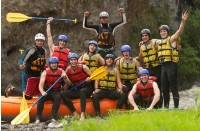
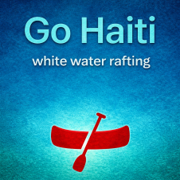
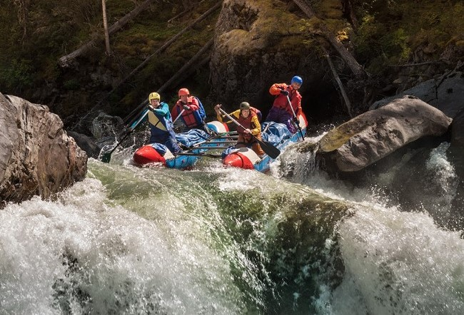
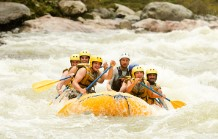
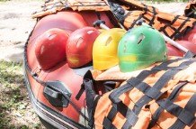
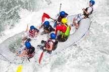

Go Haiti Explore More
At Go Haiti White Water Rafting, we offer trips for everyone ,beginners and thrill-seekers. With expert guides, beautiful views, and safe adventures, every trip is fun and unforgettable.



At Go Haiti White Water Rafting, we offer trips for everyone ,beginners and thrill-seekers. With expert guides, beautiful views, and safe adventures, every trip is fun and unforgettable.
We can help you to plan your rafting experience in Haiti-Contact us please:
Contact Us
Perfect for first-time rafters and families, this gentle trip offers fun rapids, calm stretches, and beautiful scenery. Enjoy a safe introduction to white water rafting while learning the basics from our expert guides

Discover Haiti s hidden natural beauty as you paddle through winding rivers surrounded by lush landscapes. This trip blends excitement and relaxation, making it ideal for adventurers who want both thrills and unforgettable views.

Ready for adrenaline? Take on powerful rapids, fast currents, and heart-pounding drops in this action-packed experience designed for thrill seekers looking for the ultimate rafting adventure.
| Trip Name | Price | Difficulty | Duration |
|---|---|---|---|
| first Adventure | $30 | Beginner | 1-hour |
| Go-exploration | $60 | intermediate | 2-hours |
| Extreme-furious | $200 | Extreme | 1-hour |